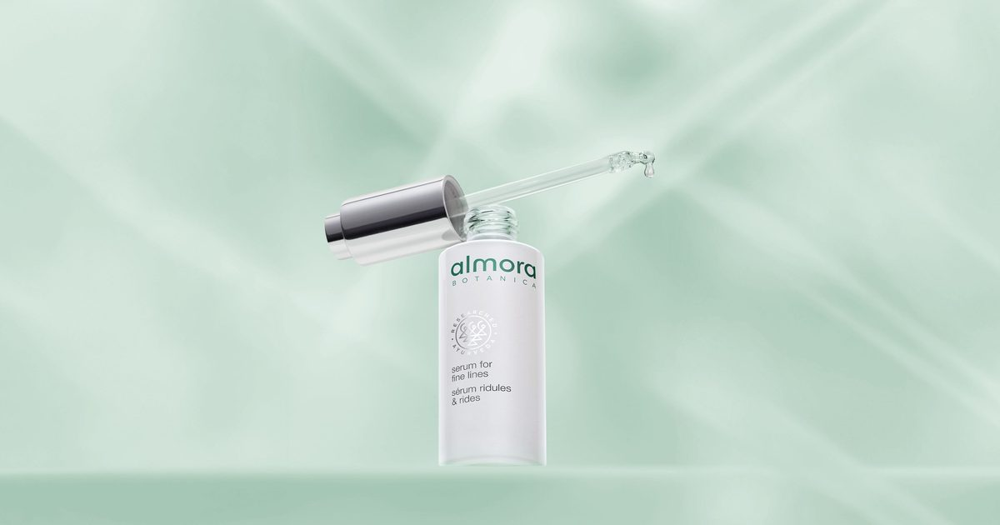

FACTUM.RU Beauty · 06.10.2026  The Natural Wrinkle-Fighting Serum That Replaced Retinol During My Pregnancy Источник: https://www.newbeauty.com/view/almora-natural-wrinkle-fighting-serum-during-pregnancy